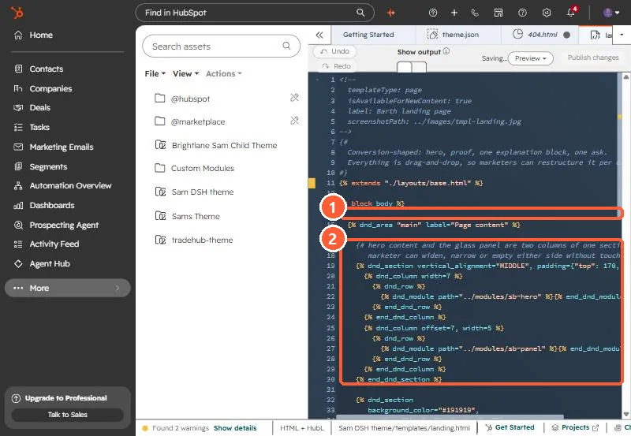

Short answer
A landing page template only needs three parts: a branded header, a footer, and one {% dnd_area %} in between. HubSpot's docs describe a drag and drop area as a container that makes part of the page editable in structure, design and content. For one agency I built this by cloning their existing landing page template and emptying its body group. For a bank I wrote a coded version: doctype, head, one dnd_area, and the footer includes. Two things break it: an extends path that does not resolve, and dnd columns whose widths overlap.
1. Why a blank body
The agency's landing page templates had fixed modules in the body, so every new page started with the last campaign's layout. They wanted brand header and footer locked, and everything between them built from modules per page.
2. The structure
For that agency I cloned their existing drag and drop landing page template and emptied the body group. Header and footer stayed as the global modules used on their other pages, so a brand change still happens in one place. For a coded version, the whole body is one area:
<!--
templateType: page
isAvailableForNewContent: true
label: Blank landing page
-->
<!doctype html>
<html lang="{{ html_lang }}">
<head>
<meta charset="utf-8">
<title>{{ page_meta.html_title }}</title>
{{ standard_header_includes }}
</head>
<body>
{% global_partial path="../partials/header.html" %}
{% dnd_area "main" label="Page content" %}{% end_dnd_area %}
{% global_partial path="../partials/footer.html" %}
{{ standard_footer_includes }}
</body>
</html>My own theme's landing template does the same thing inside a theme layout. It extends the base layout and puts one dnd_area in the body block. It ships default sections, but each one is a normal section the marketer can remove.


3. Two bugs that break it
- A broken extends path. At a community bank, a template that extended
./layouts/base.hubl.htmlhad been copied out of its theme, so the path no longer resolved and the drag and drop area never appeared. The fix was a standalone template with noextends. Details in coded template missing from the picker. - Overlapping columns. If two
dnd_columnwidths and offsets do not fit in twelve, HubSpot rejects the area and the editor shows only header and footer. See template doesn't allow modules.
4. Test with a new page
Create a new page from the template rather than reopening an old draft. HubSpot's docs note drag and drop areas cannot be used in blog post and email templates, so this pattern is for pages only.